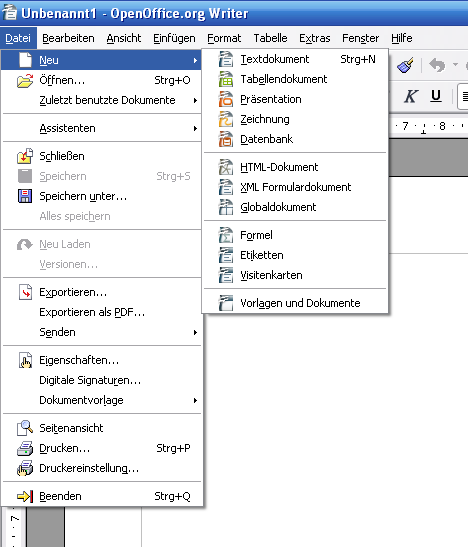
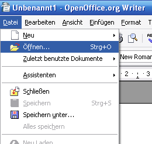
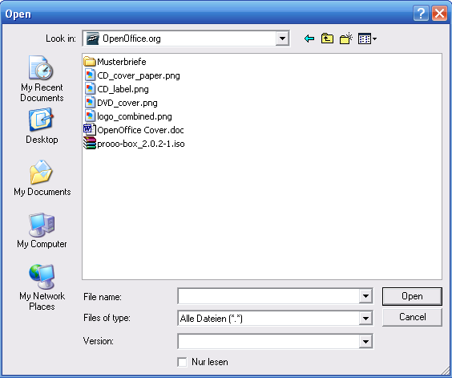
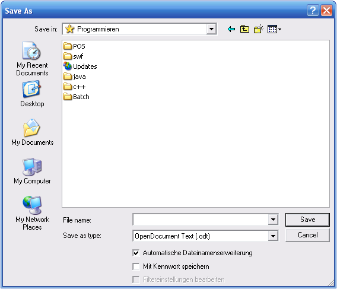
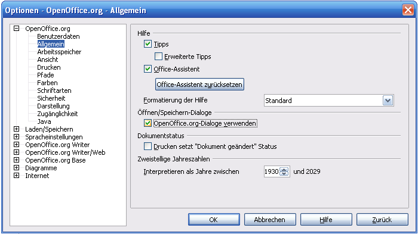
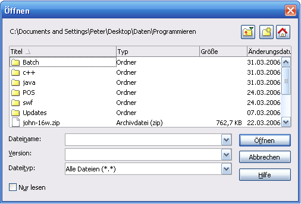
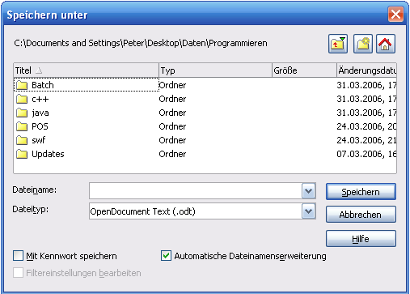

| [zurück] | [Hauptmenü] |
[weiter] |
OpenOffice.org Textdokument
-
Dokument erstellen, speichern
Neu
Um ein neues Dokument zu erstellen, gehen Sie in das Menü:
Datei>Neu>Textdokument oder klicken Sie auf das
Symbol Neu in der Funktionsleiste.
Es sollte ein leeres "Blatt Papier" erscheinen, das nun zu
füllen ist!
|
 |
| Abb. 1: Erstellen eines neuen
Dokumentes |
Öffnen
Wenn sie ein schon bestehendes Dokument öffnen
möchten, können Sie über das gelbe Icon oder
dem Menü:
Datei>Öffnen zu dem Öffnen-Dialog
gelangen.
|
 |
| Abb. 2: Datei>Öffnen |
es erscheint:
|

|
|
Abb. 3: Datei>Öffnen...
|
Speichern
Jetzt kann man beginnen den Text zu tippen oder zu
bearbeiten. Besser ist es aber, schon jetzt die Datei erstmal
auf die Festplatte zu speichern. Hier gibt es wieder mehrere
Möglichkeiten. Entweder das Diskettensymbol  in der Funktionsleiste
oder oder im Menü:
Datei>Speichern unter .... Es erscheint dann ein
Dialog, der fragt, wo und mit welchem Dateinamen das Dokument
abgelegt werden soll.
in der Funktionsleiste
oder oder im Menü:
Datei>Speichern unter .... Es erscheint dann ein
Dialog, der fragt, wo und mit welchem Dateinamen das Dokument
abgelegt werden soll.
|

|
|
Abb. 3: Standard Dialog: Datei Speichern
|
Alternative Dialoge
Es gibt auch OpenOffice.org's eigene Dialoge für das
Öffnen und Speichern. Diese kann man über das
Optionenmenü aktivieren. Hierfür gehen Sie in das
Menü:
Extras>Optionen dann
OpenOffice.org>Allgemein:
|

|
|
Abb. 2: Optionen: Standarddialoge für
Öffnen/Speichern ändern
|
Dies schaut dann wie folgt aus:
|

 |
|
Abb. 2: "Datei>Öffnen" und "Datei>Speichern unter" ...
(OpenOffice.org Dialoge)
|
Ein Vorteil dieser überarbeiteten Dialoge ist, dass man
den momentanen Pfad zum angezeigten Verzeichnis sofort
sieht, was im Standarddialog nicht ist. Hingegen bietet der
Standarddialog das vielleicht von anderen Programmen gewohnte
Bild.
Tipp
Möchten Sie nicht, dass persönliche Daten
wie Name, Versionsnummer, etc. in dem Dokument gespeichert
werden, so können Sie dies mittels der
Dokumenteneigenschaften
(Menü:
Datei>Eigenschaften...) unterbinden. Klicken Sie
dort in der Registrierkarte Allgemein das
Häkchen bei "Benutzerdaten verwenden" weg und klicken
Sie auf den Button für "Löschen" um bisherige Daten
zu löschen!
| [zurück] | [Hauptmenü] |
[weiter] |
© Copyright 2003, Harald Schilly
This documentation is part of "Erste Schritte: OpenOffice.org Textdokument", which is released
under the terms of the PDL.
For full copyright and license info read the index page.
Contributors are: Wieland Peter